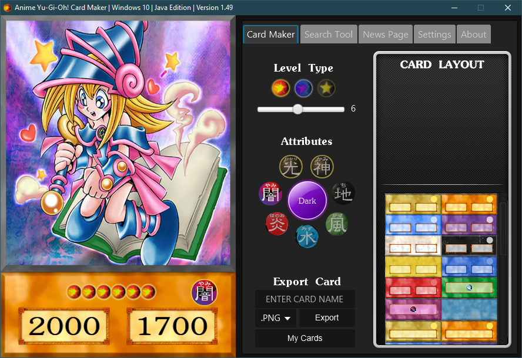
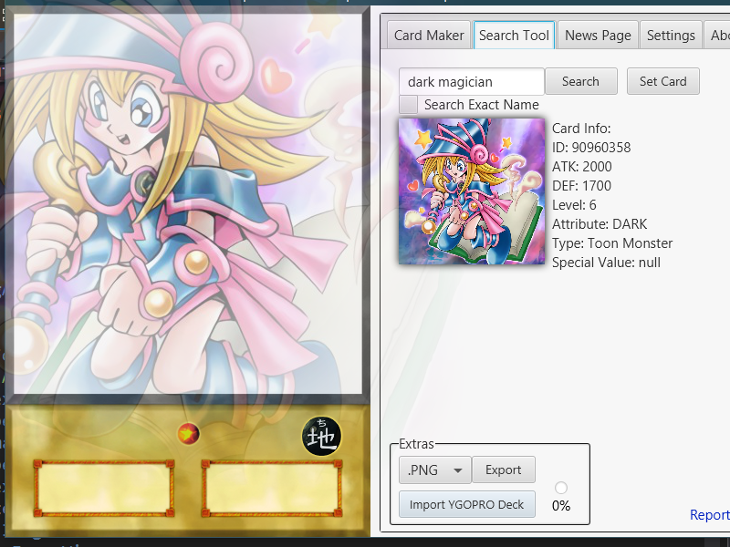

Don't forget to leave us some feedback here to help us improve our application!
Like us on Facebook!
Version 1.49 Adjustment Update (Latest):
- Fixed level positioning, and made the glow a bit more apparent.
- Made ATK/DEF/Pendulum scale text more stretched out to match the 4kids version more (can be toggled back in the settings).
- Added a Dark Mode option.
- 
Version 1.48 Quality of Life Update:
- Added card name in title of card gallery.
- Added drag and drop function to drop your card artwork straight in!
- This also works with the artwork from the search tool.
- 
Version 1.47 Search Tool Update:
- Added a Card Gallery viewer!
- Fixed pendulum XYZ levels showing as normal levels instead of ranks.
- Fixed art crops when not a pendulum card.
- Fixed some vertical card art being cropped for pendulum cards. (e.g. Card #25857977)
- Fixed pendulum scales transparency issues with specialised pendulum cards (e.g. synchro, xyz, fusion pendulums)
- Slightly readjusted the pendulum scale box sizes to more accurately match the real one.
Version 1.46 Search Tool Update:
- Added special case handling for cards that have "?". This is done manually, but as long as we keep discovering these cards, it'll get better!
Version 1.45 Search Tool Update:
- Small but crucial update to latest Java 8 Runtime Version.
Version 1.44 Search Tool Update:
- Added report card label for search tool:
- This lets you report cards that show incorrect information when using the tool. (e.g. some cards with "?" as their ATK/DEF will show as 0, report these and we will look into them.
Version 1.43 Search Tool Update:
- Fixes for Search Tool:
- Fixed artwork scaling issue for Pendulum monsters.
- Fixed Pendulum Scale 0 showing up as blank on the scales.
- Fixed XYZ Monsters appearing with regular levels instead of XYZ ones.
- Fixed Pendulum cards having 1 level less than they should.
- Added "Exact Name Search" option in Search Tool to easily search for specific cards.
Version 1.42 Small Update:
- Import YDK decklist and export the deck into a folder of the same name.
- You can now search by card ID number.
- You no longer need the exact name of a card. Best match is applied
- Fixed spell and trap cards not changing artwork.
- Tuner, Token, Spirit, Union, Gemini, Toon all show as normal when they should be effect monsters.
Version 1.41 Small Update:
- Better image search for SearchCards, no longer need a list of URLs. (Using solely YGOPRODeck database)
- This will (hopefully) fix some issues that Mac users were having.
Version 1.4 Update:
- Added Search Tool
- Lots of code optimisations for the program.
Version 1.3 Content Update:
- Added Link Monsters
- Optimised the program.
- Fixed red and blue pendulum text being visible when it shouldn't be.
Version 1.22 Hotfix:
- When clicking on a level or attribute, it will then grey out the surrounding options to show you which you have selected.
- Fixed download link issues.
Version 1.21 Hotfix:
- Fixes the exporting issue found on Mac and Linux.
- Fixed AYGO folders not being in the right subfolders.
- Other small cosmetic changes.
Version 1.2 Content Update:
- Brand new, and fancy layout.
- Added 5 NEW Cards:
- Pendulum Ritual
- Pendulum Fusion
- Pendulum Synchro
- Pendulum XYZ
- Pendulum Dark Synchro
- Fixed broken links to websites and update checker.
- Fixed broken export directory for Mac and Linux
- Added a "Switch to News Page on Startup" option.
- Added the "About" page.
Version 1.1 Content Update:
- Added update checker (with custom notifications)
- Added Splash screen
- Added "Settings" tab
- Can choose to check for updates.
- Disabled maximizing the window
- Organised the templates
- Added Normal Pendulum
- Added Effect Pendulum
- Added Dark Synchro
- Added ATK/DEF token monster
- Added custom normal monster
- You now have to confirm if you want to overwrite a card with the same name
- Added splash notification when card successfully exported
Version 1.0 First Update:
- Basic card creation features!
- If you're reading this, then welcome to the first ever version of this Java Edition, and thank you for downloading. Please let me know what you think about it, and most of all; enjoy!